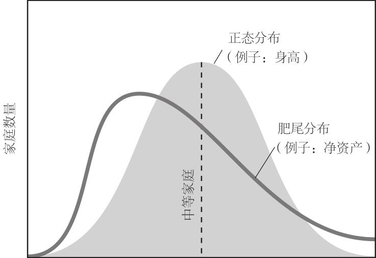

我将卡尼曼和塔勒布的批评视为对“超级预测”这个概念最有力的挑战。我们的经历相差甚远，在哲学观念上又如此接近，足以使我们能够交流甚至合作。
为了说明我们在哲学观念上的接近程度，我们来看一份官话堆砌成的备忘录，它永远不会成为历史的注解，但在当时很能说明问题。2001年4月11日，国防部长唐纳德•拉姆斯菲尔德给乔治•W•布什总统和副总统迪克•切尼递交了一份备忘录。“我偶然看到一篇文章，它谈到了预测未来的难度，”拉姆斯菲尔德写道，“我认为你们会感兴趣的。”9 该文分析了1900~2000年间每一个10年期开端的战略态势，在所有情形中，本次10年期开端的现实世界与上一个10年期相比，发生了令人震惊的变化。“这一切说明了，我无法确定2010年会是什么样，”文章作者林顿•威尔斯（Linton Wells）总结道，“但我确信，它将与我们所预期的大相径庭，因此我们应根据实际情况来制订计划。”
拉姆斯菲尔德提交这份备忘录后，整整过了5个月，一个恐怖分子小组操纵飞机撞击双子塔和五角大楼。此后10年的世界又一次与舆论界茶余饭后所预期的世界相差甚远。
塔勒布、卡尼曼和我都同意，没有证据显示地缘政治和经济预测者可以准确预测10年后的事情，除了特别明显的预兆，例如“将会爆发冲突”；而当大量预测者做了大量预测时，总会不可避免地出现少数猜中事实的幸运儿。可预测性所受到的这些制约是非线性系统变化无常的动力的结果，这是可以预想到的。在我的EPJ研究中，专家对5年后事件概率的预测比较准确。这种预测很普遍，即使在那些应该表现更出色的机构中也是如此。美国国会每4年要求国防部提交一份关于20年内国家安全环境的预测报告。“国防部对这份4年期国防评估报告投入了大量人力物力。”前美国海军部长理查德•丹齐格（Richard Danzig）评论说。10 正是这个惯例促使林顿•威尔斯进行了适度的、理性的反思，并写下了那篇文章。
对2001年4年期国防评估报告的思考
•1900年，如果你是世界上最强大国家的安全政策制定者，你应该是一位英国人，正以警惕的目光审视着多年来的宿敌法国。
•1920年，你们参加了“一战”并成为战胜国，你将投入到与昔日盟友美国和日本的海军军备竞赛中。
•1930年，《限制海军军备条约》生效，大萧条时代来临，标准的国防计划书都写着“10年无战争”。
•1950年，英国不再是世界头号强国，原子能时代初露曙光，“警察行动”在朝鲜半岛展开。
•10年后，政治焦点转变为“导弹实力差距”，战略模式由“大规模报复”变为“灵活反应”；很少有人听说过越南这个国家。
•1910年，你将与法国结盟，你们共同的敌人是德国。
•9年后，“二战”爆发。
•1970年，美国对越南的干涉达到顶峰并开始滑落，我们开始与苏联缓和关系；我们选择了伊朗国王巴列维作为海湾地区的扶持对象。
•1980年，苏联入侵阿富汗，伊朗处于革命阵痛中；关于美国的“空心部队”和“脆弱之窗”的讨论见诸媒体；美国成为世界历史上最大的债权国。
•1990年，苏联在一年内解体；驻扎在中东沙漠地带的美军即将展示自己的实力；美国转变为世界上最大的债务国；几乎没有人听说过互联网。•10年后，波兰成为北约成员国，非对称威胁的影响超越地缘政治；信息技术、生物技术、机器人技术、纳米技术和高密度能量源技术的同步革命预示着几乎无法预测的变革的到来。
•这一切说明了，我无法确定2010年会是什么样，但我确信，它将与我们所预期的大相径庭，因此我们应根据实际情况来制订计划。
林顿•威尔斯
威尔斯在结尾的评论中暗示有更好的方法来开展国防评估。如果要制订超出预测能力范围的未来规划，请对意外情况做好应急预案。也就是说，像丹齐格建议的那样，在规划中加强适应性和恢复能力。假设现实与你的设想完全不符，你该如何应对？“计划是无用之物，”艾森豪威尔在谈论为战斗做准备工作时说道，“但制订计划是必不可少的工作。”11
塔勒布进一步阐述了这个观点，呼吁提升关键系统（例如国际银行业务和核武器）的“抗脆弱性”：不仅在遭受意外打击后能够恢复，而且还得到强化。原则上我同意他的观点。但有一点经常被忽视，那就是，针对意外情况的准备工作，无论是提高恢复能力还是抗脆弱性，都需要付出高昂代价。我们必须设定优先事项，这又让我们回到预测工作中来。以建筑规范为例。在东京，新建的大型建筑必须采用先进的工程标准来抵御大地震的破坏。这种措施费用很高。这样的代价有意义吗？地震时间无法精确预测，但地震学家知道通常哪些地区容易发生地震、震级可能有多大。东京位于地震多发区，因此代价高昂的工程标准是合理的。而在不太可能发生大地震的地区，特别是更加贫穷的国家，就没有太多必要采用同样的标准。
这类概率预估是一切长期计划的核心，但它们很少像地震准备工作中的预测那样显而易见。在数十年的时间里，美国一直保持有能力同时打两场战争的政策。可是，为什么不是3场，或者4场？为什么不准备应对外星人入侵，既然我们总是谈论这种事？答案取决于概率。两场战争的信条是建立在这样一个判断的基础上：军队必须同时进行两场战争的可能性非常之大，足以证明巨额军费开支的合理性，但同时卷入3场、4场战争或者外星人入侵的可能性不大。这样的判断是不可或缺的。有时我们在制订长期计划时，似乎避开了这样的判断，仅仅是因为我们把它隐藏起来了。这让我们感到不安。概率预估应该是明白无误的，这样我们可以思考它是否达到了它能达到的准确度。如果我们尽最大努力也只能做到猜测概率，而不是合理预估，那我们就应该说出来。知道自己知识有限总好过自以为无所不知。
当我们认真对待预测这门技术时，就很容易理解上述观点。但是我们经常以敷衍态度待之，导致社会上出现了一些荒谬思想，例如关于20年后地缘政治的预测，还有关于下一个世纪的畅销书。我相信塔勒布和卡尼曼的论著都有助于解释为什么我们总是犯这类错误。
卡尼曼和其他现代心理学先驱已经证明，我们的大脑渴望确定性，如果看不到确定性，大脑会假装它存在。在预测过程中，后视偏差是最大的问题。还记得吗，被戈尔巴乔夫的意外举动惊呆了的专家们很快就确信那完全是可以理解的，甚至是可以预测的，不过，这只是他们的马后炮而已。
排除意外情况的历史看起来比实际更容易预测。有些人因此相信，未来完全是可以预测的，实则不然。中国在21世纪中叶会成为世界头号经济大国吗？许多人相信这一点。也许吧。然而，在20世纪80年代和90年代初，曾经有一种观点更加流行，即日本不久就会称霸世界经济，但在那之后日本就从高峰一路下滑，这至少应该让那些声称中国将领先世界的人暂时闭嘴吧。12 可是，现实通常不是这样。因为，那些人回顾过去时发现，认为日本会成为世界霸主这件事本身就让人感觉奇怪。日本当然会衰退！在他们看来，这是明显的事实（其实是事后分析），正如现在看来，中国不会衰退也是显而易见的事实。
现在思考一下，当上述心理遭遇纳西姆•塔勒布详细描述的现实时，发生了什么。
在日常生活中，我们常常会遇到重复出现的各类事物，其频率符合典型的正态分布。例如，大多数成年人身高在5英尺和6英尺之间，4英尺和7英尺非常少见，只有极少数人身高3英尺（最矮的不到3英尺）或8英尺（最高的接近9英尺）。但是不是所有事物都适用于正态分布，美国人的财富分布不均就证明了这一点。假定中等家庭的净资产约为10万美元，那么95%的家庭净资产位于1万美元和100万美元之间。如果财富分布符合典型的正态分布，就像下图所示，那么，我们几乎不可能见到净资产超过1000万美元的美国家庭。而遇到净资产为10亿美元的家庭的概率为万亿分之一。但是财富并非是正态分布的。近500人的个人净资产超过10亿美元，其中少数人超过100亿美元。财富的真实分布呈现肥尾状，这种分布有可能包含非常极端的结果：美国人成为亿万富豪的真实概率从万亿分之一骤增至约70万分之一。

下面要探讨的是塔勒布世界观中最难理解的部分。他假设历史可能性—未来所有可能的展现方式—的分布方式与资产而非身高相似。这意味着我们的世界非常易变，远远超出大多数人的认识，这可能会导致我们严重误判。
让我们穿越历史回到1914年的夏天。“一战”即将爆发。假设英国外交部某位高级官员（错误地）估计，历史上历次战争造成的死亡人数围绕10万这个数呈现正态分布。13 这样，他对一场战争死亡人数最坏的估计是100万人。现在，他遇到一位预测者，后者声称欧洲将陷入一场会造成1000万人死亡的世界大战，而后还会爆发另一场世界大战，6000万人将失去生命。这位制定政策的官员认为两场大灾难相继出现的概率趋近于零，几百万分之一吧，因此他认为预测者是个不切实际的家伙，拒绝考虑他的预言。
如果对于战争伤亡人数，这位决策者使用的是更加切合实际的肥尾分布，历史又会如何演变？他仍然会认为那个预测不可能成为现实，但是现在它发生的概率是原来的数千倍。14 这种冲击类似于，你买强力球彩票中奖的机会从500万分之一提高至500分之一，当你知道这一点后，难道不会急匆匆地去买彩票吗？假如1914年的一位决策者通过肥尾分布了解了一场会造成重大伤亡的战争的真正危险，他很可能会更加努力地阻止这场迫在眉睫的大灾难。
我们还可以换个角度看问题。即使身高也呈现肥尾分布，在大街上遇到12英尺或15英尺高的人的机会仍然非常罕见，但可以想见这样的事在一生中还是有可能发生的。同样道理，既然我们知道战争伤亡人数实际上是肥尾分布，那么当军事史学家告诉我们，若希特勒在1941年更早时候发动对苏联的入侵，或者凭直觉认识到原子弹的破坏力，“二战”可能造成远远超过6000万人的伤亡，此时我们不应该感到震惊。可能性有很多种，但只有一种是真实发生的。
有些人很难接受塔勒布关于可能世界的统计分布的理念。它感觉像是书呆子的胡言乱语。只有一个现实世界：过去的历史，现在的生活，未来的发展。可是，如果你像塔勒布那样对数学敏感，你就会习惯这样一种理念：我们所生活的世界只是从大量可能世界中以近乎随机方式出现的。历史不一定会像它实际展现的那样演变，现实同样如此。未来是开放的。历史实际上是可能性的无限组合。谨慎的领导人对此有深刻认识，例如，约翰•F•肯尼迪意识到古巴导弹危机的结果具有多种可能性，可能和平结束，也可能演变为核毁灭，引发第三次世界大战，造成数亿人死亡。他的表现正说明了他对上述观点的深刻理解。肥尾理论绝非虚妄之语！15
丹尼尔•卡尼曼用一个非常巧妙的思维实验说明了这个观点。他请我们分析三位对20世纪产生过重大影响的领导人：希特勒和斯大林。他们都是通过一场绝不会接受女性领导人的政治运动登上权力舞台的。但是，如果将他们每个人通向权力的道路比作一个未受精卵，它有50%的机会与不同的精子结合，形成雌性受精卵，进而孵化成女胎，最后成为女婴。也就是说，三位领导人都是男性的概率只有12.5%，至少一名领导人是女性的概率有87.5%。不同的结果会产生什么样的连锁效应，已不得而知，但很可能是巨大的。如果1889年4月20日在奥地利因河畔的布劳瑙出生的是安娜•希特勒，而不是阿道夫•希特勒，或者，一位更加聪明的纳粹独裁者通过更加狡猾的决策对我们施加了更加恐怖的罪行，那么“二战”也许永远不会发生。
我们三个人都是这样看待历史的。反事实者关注的是可能性有多么开放，我们精心制订的计划多么容易被扇动的蝴蝶翅膀所破坏。沉迷于假定历史让我们发自肺腑地认同塔勒布关于完全不确定性的见解。细细思量历史如何演变出无数不同的结果，现在又如何孕育无数不同的未来，就像思考银河系中已知的1000亿颗行星和宇宙中已知的1000亿个星系一样，让我们渐渐产生了深层次的谦卑之心。16
卡尼曼、塔勒布和我都非常同意上述观点。但我也相信，谦卑心理不应该模糊这一事实：通过巨大努力，至少在某些真正重要的发展趋势上，人们可以得出准确的预测。诚然，面对万事万物的庞大体系，人类的预见能力微不足道，但我们完全不必去嘲笑之，因为我们的生命本身就是这样微不足道。